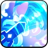

Toppings:


Sea Fairy Cookie estuvo congelada bajo una maldición hace mucho tiempo. Pero tal vez debido a su corazón afligido, su alma estaba congelada
más allá de la magia. Si no fuera por la cálida amabilidad de nuestras Cookies, ella podría haber elegido quedarse congelada para siempre.
Más allá de su cabello suelto, el brillo en sus ojos todavía indica que está dispuesta a luchar contra su destino.
" Siento el calor de tu corazón..."
Esta piedra contiene un pedazo del alma de Sea Fairy Cookie. Su superficie es fría como el mar invernal, pero su núcleo brilla con calidez.


Los abrumadores sentimientos de Sea Fairy Cookie hacia la Luna potencian sus habilidades para controlar el mar. Cada vez que use su
habilidad, obtendrá una acumulación de Tidal Wave. Al obtener acumulaciones x2, la habilidad mejorará, invocando una ola enorme que
inflige daño, empuja a los enemigos hacia atrás y los aturde. Sea Fairy Cookie también aumentará el DAÑO CRIT de los aliados que pueden
causar daño de tipo Agua.